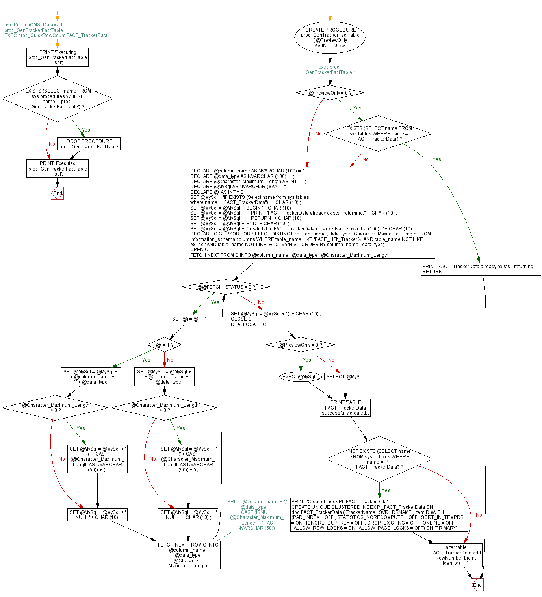

<a href="proc_GenTrackerFactTable.png"></a>
-- use KenticoCMS_DataMart -- proc_GenTrackerFactTable -- EXEC proc_QuickRowCount FACT_TrackerData GO PRINT 'Executing proc_GenTrackerFactTable.sql'; GO IF EXISTS (SELECT name FROM sys.procedures WHERE name = 'proc_GenTrackerFactTable') BEGIN DROP PROCEDURE proc_GenTrackerFactTable; END; GO -- exec proc_GenTrackerFactTable 1 CREATE PROCEDURE proc_GenTrackerFactTable ( @PreviewOnly AS INT = 0) AS BEGIN IF @PreviewOnly = 0 BEGIN IF EXISTS (SELECT name FROM sys.tables WHERE name = 'FACT_TrackerData') BEGIN PRINT 'FACT_TrackerData already exists - returning.'; RETURN; END; END; DECLARE @column_name AS NVARCHAR (100) = ''; DECLARE @data_type AS NVARCHAR (100) = ''; DECLARE @Character_Maximum_Length AS INT = 0; DECLARE @MySql AS NVARCHAR (MAX) = ''; DECLARE @i AS INT = 0; SET @MySql = 'IF EXISTS (Select name from sys.tables where name = ''FACT_TrackerData'') ' + CHAR (10) ; SET @MySql = @MySql + 'BEGIN ' + CHAR (10) ; SET @MySql = @MySql + ' PRINT ''FACT_TrackerData already exists - returning.''' + CHAR (10) ; SET @MySql = @MySql + ' RETURN ' + CHAR (10) ; SET @MySql = @MySql + 'END ' + CHAR (10) ; SET @MySql = @MySql + 'Create table FACT_TrackerData ( TrackerName nvarchar(100) , ' + CHAR (10) ; DECLARE C CURSOR FOR SELECT DISTINCT column_name , data_type , Character_Maximum_Length FROM information_schema.columns WHERE table_name LIKE 'BASE_HFit_Tracker%' AND table_name NOT LIKE '%_del' AND table_name NOT LIKE '%_CTVerHIST' ORDER BY column_name , data_type; OPEN C; FETCH NEXT FROM C INTO @column_name , @data_type , @Character_Maximum_Length; WHILE @@FETCH_STATUS = 0 BEGIN SET @i = @i + 1; IF @i = 1 BEGIN SET @MySql = @MySql + ' ' + @column_name + ' ' + @data_type; IF @Character_Maximum_Length > 0 BEGIN SET @MySql = @MySql + ' (' + CAST (@Character_Maximum_Length AS NVARCHAR (50)) + ')'; END; SET @MySql = @MySql + ' NULL ' + CHAR (10) ; END ; ELSE BEGIN SET @MySql = @MySql + ' ,' + @column_name + ' ' + @data_type; IF @Character_Maximum_Length > 0 BEGIN SET @MySql = @MySql + ' (' + CAST (@Character_Maximum_Length AS NVARCHAR (50)) + ')'; END; SET @MySql = @MySql + ' NULL ' + CHAR (10) ; END; --PRINT @column_name + ',' + @data_type + ',' + CAST (ISNULL (@Character_Maximum_Length , -1) AS NVARCHAR (50)) ; FETCH NEXT FROM C INTO @column_name , @data_type , @Character_Maximum_Length; END; SET @MySql = @MySql + ' )' + CHAR (10) ; CLOSE C; DEALLOCATE C; IF @PreviewOnly = 0 BEGIN EXEC (@MySql) ; END ELSE BEGIN SELECT @MySql; END; PRINT 'TABLE FACT_TrackerData successfully created.'; IF NOT EXISTS (SELECT name FROM sys.indexes WHERE name = 'PI_FACT_TrackerData') BEGIN PRINT 'Created index PI_FACT_TrackerData'; CREATE UNIQUE CLUSTERED INDEX PI_FACT_TrackerData ON dbo.FACT_TrackerData ( TrackerName , SVR , DBNAME , ItemID )WITH (PAD_INDEX = OFF , STATISTICS_NORECOMPUTE = OFF , SORT_IN_TEMPDB = ON , IGNORE_DUP_KEY = OFF , DROP_EXISTING = OFF , ONLINE = OFF , ALLOW_ROW_LOCKS = ON , ALLOW_PAGE_LOCKS = OFF) ON [PRIMARY]; END; alter table FACT_TrackerData add RowNumber bigint identity (1,1) END; GO PRINT 'Executed proc_GenTrackerFactTable.sql'; GO
Hide code
Visustin flow chart for T-SQL